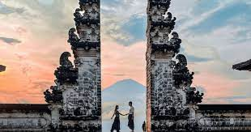

Favourite Atrractions
Tegallalang Rice Terraces are one of the most famous areas to photograph these iconic landscapes and absorb their timeless beauty. Be aware that locals ask for donations along the most popular trail through the rice fields here, and many request fees for entrance and parking along the road. A relaxing way to enjoy the lush landscapes is at one of the many restaurants and cafés overlooking the fields.

Pura Luhur Lempuyang is one of Bali's most sacred temples, and one of the hardest to access.
The 17th-century Pura Ulun Danu Bratan is one of Bali's most picturesque temple complexes. It sits on a small island along the western shore of Lake Bratan, in the cool highlands of central Bali. Set against the imposing backdrop of Gunung Bratan, the thatched temples reflect on the lake, and when the water levels rise, they seem to float on its surface.